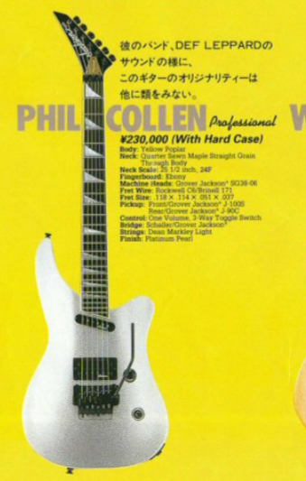
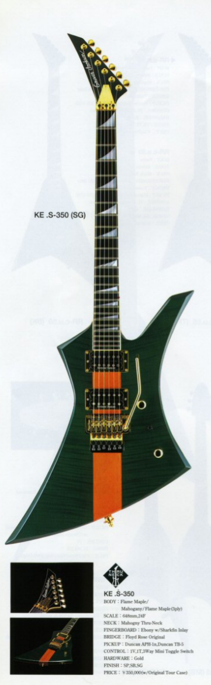
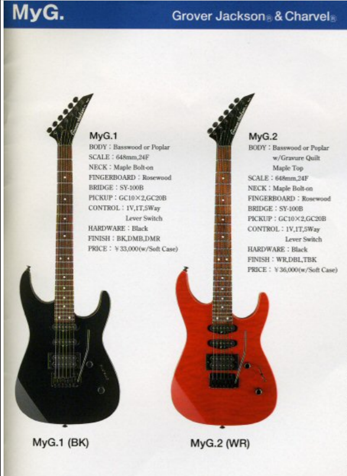
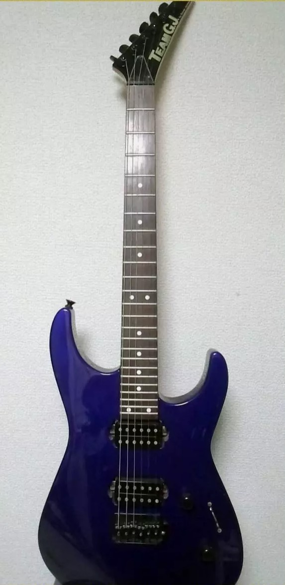
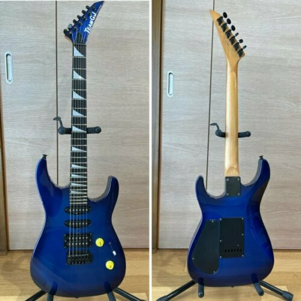
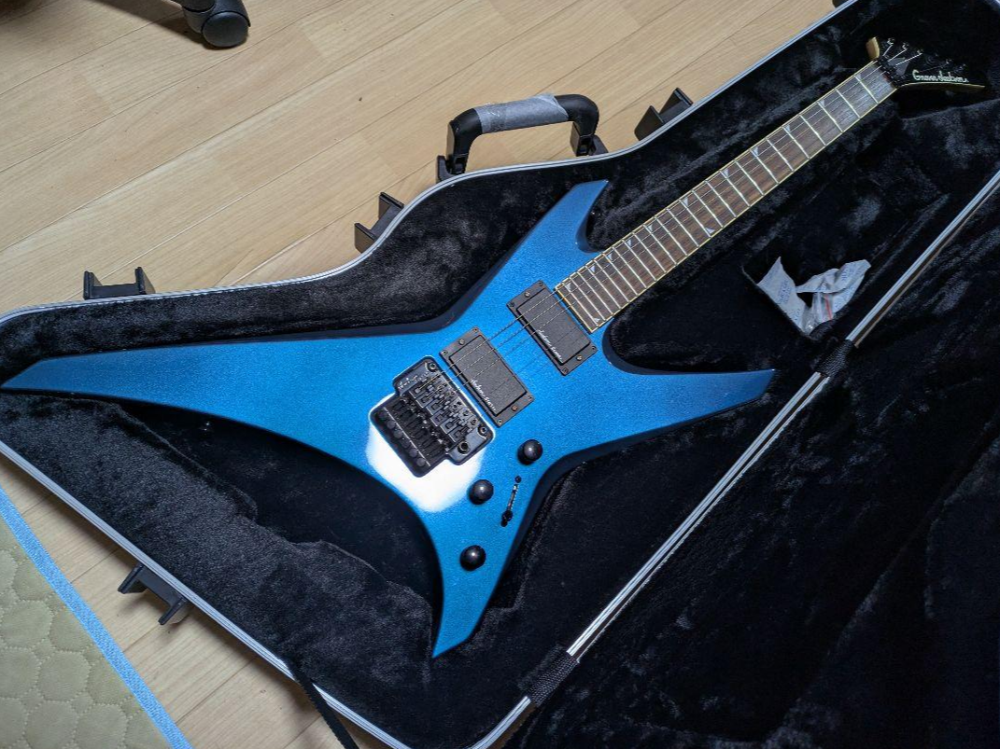

Database #3: Grover Jackson page
-Database #3 Grover Jackson-
Database #1: Main
Click here for Database #2: Additional Jackson models
Click here for Database #4 Jackson Stars
CHARVEL DATABASE ON THIS PAGE.
***More information on Jacksons and Charvels, how to decipher model names, list of non-guitar Charvel and Jackson products, reference materials, and links***
- Grover Jacksons
- Later 90s Grover Jackson
- Other, Team GJ
- More. See sidebar.
Grover Jackson
Japanese Market only Jacksons with equivalents to the USA domestic versions, but with different specifications, finishes, and sometimes completely unique models and variants. These are sometimes Team GJ or Jackson Stars, but it’s the same builders. (see section)
Grover Jackson Soloists: Japan only Soloists with the usual neck-thru design, compound radius, 24 frets, 25.5” scale, etc unless noted.

- Grover Jackson Soloist Special Custom: The top end Custom series. 1990-95. Ash body, quartersawn maple neck, ebony fretboard with pearl sharkfin inlays. 24 frets. Jackson J-95/ S-6F HH pickups. Schaller JT-590 tremolo. Jackson J-200 parametric EQ. Vol, tone, boost. Gold hardware. Finishes: Trans prim blue
- Soloist Custom HH: An HH Custom. Yellow Poplar body, quartersawn maple neck, bound ebony fretboard with pearl sharkfin inlays. 24 frets. Jackson J-80C/J-50BC HH pickups. Schaller JT-590 tremolo. Vol, tone, JE-1200 mid boost, JE-0005 switch. Black hardware. Finishes: metallic black, PBW, platinum purple, platinum pearl crackle , wizard blue
- Soloist Custom SSH: SSH version of above. Jackson J-200/J-200/J-50BC pickups. Finishes: metallic black, pearl blue white, wizard blue, platinum purple, platinum
pearl crackle
- Grover Jackson Soloist Arched-Top: Showing in 1991 catalog. Very close to below but one color option. Mahogany body and neck(?) flamed maple top. Bound ebony fretboard with pearl sharkfin inlays. 24 frets. J-100S/J-100S/J-80 HSS pickups. Vol, tone, five-way switch. Schaller tremolo. Black hardware. Finishes: See-through violet

- Grover Jackson Soloist Arched-Top Custom: Arch top Soloist with unique HSS set up. Mahogany body with flame maple top. Mahogany set-neck, 24 frets, bound ebony fretboard with pearl sharkfin inlays. Jackson J-100S/J-100S/J-80 HSS pickups. Vol, tone, five-way switch. Schaller tremolo. Black hardware. Finishes: see through violet, see through blue, see through red
- Grover Jackson Soloist Arched-top Custom HH: The Grover Jackson ATN Soloist Pro? Not exactly. Mahogany body with flame maple top and back. Mahogany set neck (!). Ebony fretboard with reverse sharkfin inlays. 24 frets. Normal 25.5” scale. Jackson J-50N/J-80 HH pickups. Vol, tone, JE-0005 switch. TOM string-thru body bridge. Finishes: see three faded orange, vintage tobacco sunburst, see through demn blue
- Soloist Standard HH: Despite names, mostly a passive Custom HH. Yellow poplar body, maple neck, bound rosewood fretboard with pearl sharkfin inlay, 24 frets. Jackson J-80C/J-50N HH pickups. Schaller JT-590 tremolo. Vol, tone, toggle. Black hardware. Headstock matches finish. Finishes: black violet, metallic black, pearl violet white, candy blue,
- Soloist standard SSH: HSS version of above. Jackson J-100/J-100/J-80 HSS pickups. Same otherwise. Headstock matches finish (?) Finishes: black, violet, metallic black, pearl violet white, candy blue
- Grover Jackson Soloist: ‘Normal’ Soloist. 1990. Yellow Poplar body, maple neck, bound Ebony fretboard with pearl sharkfin inlay. 24 frets. J-200/J-200/J-50B HSS pickups. Vol, tone, JE-1200 mid boost, JE-0005 switch. Schaller tremolo. Black hardware. Finishes: light electric blue, pearl blue white, metallic black, orange
- Grover Jackson Soloist Jr.: A short scale Soloist. 1990. Yellow poplar body, maple neck, 24 frets. 24.75” scale length. Bound ebony fretboard with reverse sharkfin inlays. J-200/J-50B HS pickups. Schaller tremolo. Vol, mid-boost, toggle switch. Black hardware. Finishes: pearl blue white, metallic black
Grover Jackson Dinky: Also includes subcategories, Dinky Axe a Dinky with a slightly different body shape and Super Dinky which is Fusion (24.75”) scale.

- Grover Jackson Super Dinky Custom HH: High end short scale Dinky. Yellow poplar body, maple neck, maple fretboard with finish matching offset small sharkfin inlay. 24 frets. Jackson J-80C/J-50BC HH pickups (matches finish). Takeuchi FLC-PRO tremolo. Vol, tone, JE-0005 switch. Headstock matches finish. Finishes: deep metallic red, candy blue, metallic black, pearl blue white
- Super Dinky Custom SSH: HSS version of above. Jackson J-100S/J-100S/J-80C pickups. Finishes: deep metallic red, candy blue, metallic black, pearl blue white
- Grover Jackson Super Dinky Standard HH: Offers different body woods and aesthetic. Mahogany body, maple neck, bound rosewood fretboard with offset pearl dots. 24 frets. Jackson J-80/J-50N HH pickups. Takeuchi FLC-Pro tremolo. Vol, tone, three-way toggle. Black hardware. Note: comparable to the Fusion Professional HH but with different pickups. Finishes: natural mahogany, wine red, vintage brown sunburst, see through white
- Super Dinky Standard SSH: HSS version of above. Jackson J-100S/J-100S/J-80 pickups. Finishes: natural mahogany, wine red, vintage brown sunburst, see through white
- Grover Jackson Super Dinky Student SH: Entry level Super Dinky. Yellow poplar body, maple neck, rosewood fretboard with white dots. 24 frets. Jackson J-90/S-6F HS pickups. Takeuchi FLC-Pro tremolo. Vol, tone, three-way toggle. Black hardware. Headstock matches finish. Finishes: black, snow white, candy blue, violet red, metallic purple
- Super Dinky Student HH: Same as above but with two humbuckers. Jackson J-90/J-50B HH pickups. Available in left-hand version. Finishes: black, snow white, candy blue, violet red (right hand only), metallic purple (right-hand only)
- Super Dinky Student SSH: Same as above but with HSS set up. Jackson J-100S/J-100S/J-90 pickups. Available in left-hand version. Finishes: black, snow white, candy blue, violet red (right hand only), metallic purple (right-hand only)
- Jackson Dinky Axe Custom: Highest end Dinky Axe featuring a slimmed down body. Yellow poplar body, maple neck, ebony fretboard with pearl sharkfin inlay. Jackson J-200/S-6F/J-95 SS+H pickups. Schaller JT-590 tremolo. Vol, tone, JE-1550 EQ mid boost, mode select mini switch. JE-0005 five-way switch. Black hardware. Headstock matches finish. Finishes: gradation red, gradation blue

- Dinky Axe Standard HH: Yellow poplar body, maple neck, rosewood fretboard with pearl sharkfin inlays. Jackson J-50BC/J-90C HH pickups. Schaller JT-590 tremolo. Vol, tone, three-way toggle. Black hardware. Headstock matches finish. Finishes: metallic black, pearl violet white, ultra blue metallic, metallic red, stone
- Dinky Axe Standard SSH: HSS version of above. Jackson J-100XL/J-100XL/J-90C pickups. Vol, tone, five-way switch. Finishes: metallic black, pearl violet white, ultra blue metallic, metallic red, stone
- Dinky Axe Standard HSH: HSH version of above. Jackson J-50BC/J-100XL/J-90C pickups. Vol, tone, five-way switch. Finishes: metallic black, pearl violet white, ultra blue metallic, metallic red, stone
Grover Jackson Randy Rhoads: Rhoads models.

- Grover Jackson Randy Rhoads Custom: Yellow poplar body, quartersawn maple neck (neck-thru), ebony fretboard with pearl sharkfin inlays. 22 (’90) or 24 (’92-) frets. Jackson J-50N/J-50B or J-50BC/J-90C (’92) HH pickups. Schaller JT-590 tremolo. Vol, vol, tone, toggle switch. Black hardware. Finishes: pearl gold, metallic black, pearl blue white, pearl yellow, dark blue
- Randy Rhoads Standard: Yellow poplar body, maple neck (neck-thru), rosewood fretboard with pearl sharkfin inlay. 22 frets. Jackson J-50N/J-50B HH pickups. TOM bridge, string-thru body. Vol, vol, tone, toggle switch. Gold or black hardware. Finishes: blue purple, black, pearl violet white
- Randy Rhoads Professional: 1992. A Japan only Rhoads, though it doesn’t seem to be the same as the regular ‘Professional’ line despite name, instead considered a signature model. Yellow Poplar body, quartersawn maple neck (neck-thru), bound ebony fretboard with sharkfin inlay. 22 frets. Jackson J-50N/J-50B HH pickups. Vol, vol, tone, three-way toggle. TOM bridge, string-thru body. Gold hardware. Finishes: black
Grover Jackson King V: King V models

- Grover Jackson King V: 1990. Yellow Poplar body, quartersawn maple neck. Bound ebony fretboard with 22 frets. Pearl Sharkfin inlays. Jackson J-50N/ J-90 HH pickups. Schaller tremolo. Black hardware. Vol, tone, toggle switch. Finishes: pearl red, pearl blue, white, metallic black
- King V Custom: High end King V. Yellow poplar body, quartersawn maple neck (neck-thru). Bound ebony fretboard with pearl sharkfin inlays, 24 frets. Jackson J-50BC/J-90C or J-50BC/J-90C (’92) HH pickups. Schaller JT-590 tremolo. Vol, tone, three-way toggle. Black hardware. Finishes: metallic black, pearl blue white, aluminum
- King V Standard: Yellow Poplar body, maple neck (neck-thru), rosewood fretboard with pearl sharkfin inlays. 22 frets. Jackson J-50BC/J-80C HH pickups. TOM bridge, string-thru body. Vol, vol, tone, three-way toggle. Black hardware. Headstock matches finish. Finishes: black, pearl violet white, metallic red
Grover Jackson Kelly
- Grover Jackson Kelly Custom: High end Kelly. Yellow poplar body, quartersawn maple neck (neck-thru). Bound ebony fretboard with pearl sharkfin inlays. 24 frets. Jackson J-50BC/J-90C HH pickups. Schaller JT-590 tremolo. Vol, tone, three-way toggle. Black hardware. Finishes: metallic black, pearl blue white, aluminum
Grover Jackson Basses
- Grover Jackson Futura Bass Custom: Yellow poplar body (arch-top), maple neck (thru-body), bound bony fretboard with pearl sharkfin inlay. Jackson J-20/J-150 PJ pickups. JE-2000 preamp. Vol, treble, bass, bal control. CBT-02 highmass bridge. Black hardware. Finishes: metallic black, pearl blue white, dark metallic red, candy blue
- Futura Bass Standard: Yellow poplar body (arched top), maple bolt-on neck. Rosewood fretboard with dots, 21 frets. Jackson J-20/J-150 PJ pickups. JE-2000 preamp. Vol, treble, bass, bal controls. CBT-02 high mass bridge. Black hardware. Finishes: metallic black, pearl violet white, blue purple
- Futura Bass V: Rare five string bass. Yellow Poplar body, maple neck (neck-thru), bound ebony fretboard with pearl sharkfin inlay. 21 frets. Jackson J-25/J-25 PP pickups. JE-2500 preamp. Vol, treble, bass, balance controls. Kahler Fixer 2440 bridge. Black hardware. Finishes: metallic black, pearl blue white, dark metallic red, candy blue

- Grover Jackson Super Dinky Bass: A Japanese only shortscale bass with a different body design than typical Concert/Soloist basses. Yellow poplar body, maple bolt-on neck. Rosewood fretboard with dots, 21 frets. 32" scale. Jackson J-40/J-40 HH pickups. CBT-02 highmass bridge. Vol, tone, balance control. Black hardware. Headstock matches finish. Finishes: black, snow white, candy blue, violet red, metallic purple
- Grover Jackson Soloist Bass: Highest end Concert Bass. Yellow poplar body, maple neck (neck-thru), bound ebony fretboard with pearl sharkfin inlays. 21 frets. Jackson J-20/J-40 PH pickups. Vol, treble, bass, three-way toggle. JE-2000 preamp. CBT-02 highmass bridge. Finishes: metallic black, pearl blue white, wizard blue
- Soloist Bass Custom: Yellow poplar body, maple neck (thru-body), ebony fretboard with pearl sharkfin inlays. 21 frets. Jackson J-20/J-150 PJ pickups. JE-2000 preamp. Vol, treble, bass, three-way toggle. CBT-012 high mass bridge. Finishes: metallic black, pearl blue white, platinum purple
Other models and signature guitars:
- Grover Jackson RR Dan Spitz Professional: A signature from Anthrax guitarist. Yellow poplar body, quartersawn maple neck (neck-thru), bound ebony fretboard with reverse pearl sharkfin inlay. 22 frets. EMG 85/81 HH pickups. Schaller JT-590 tremolo. Gold hardware. Vol, three-way toggle. Finishes: black
- Grover Jackson King V Dave Mustaine Professional: Signature model, very close but not exact to the normal Jackson. Yellow poplar body, quartersawn maple neck (neck-thru), bound ebony fretboard, pearl sharkfin inlays. 24 frets. Jackson J-80/Bill Lawrence L-500 HH pickups. Kahler 3310 tremolo. Vol, vol, tone, three-way switch. Black hardware. Gold truss rod cover. Finishes: black
- Grover Jackson Fire Bird: 1990. A unique Firebird style guitar. Yellow poplar body, quartersawn maple neck, bound ebony fretboard with reverse pearl sharkfin inlays. 22 frets. Jackson J-100/J-100/J-80 HSS pickups. Schaller tremolo. Vol, five-way switch. Reverse headstock. Black hardware. Finishes: yellow orange crackle, metallic black
- Grover Jackson Falcon Custom: A unique model and predecessor to the Caparison Horus guitar. Created by Itaru Kanno. Mahogany body, quarter sawn maple bolt-on neck. Rosewood fretboard with pearl sharkfin inlays. 27 frets, 24.75” scale length. Jackson J-DA/S-8F SH pickups. Schaller JT-590 tremolo. Vol, two-way pickup switch. Gold hardware. Finishes: blue faience

- Grover Jackson Phil Collen Professional: Signature model with slightly different specs than regular Jackson Phil Collen. Yellow poplar body, quartersawn maple neck (neck-thru), bound ebony fretboard with pearl sharkfin inlays. 24 frets. Jackson J-100S/J-90C HS pickups. Schaller JT-590 tremolo. Vol, three-way toggle. Black hardware. Reverse headstock and gold truss rod cover. Finishes: platinum pearl
- Grover Jackson Dinky Doug Aldrich Professional: Japanese only signature. Ash or mahogany body. Quarter sawn maple neck. Ebony fretboard with reverse pearl sharkfin inlays. 24 frets, (shallow scallop on frets 12-24). Seymour Duncan Custom/ Hot Rails or Jackson J-100S/Duncan Custom. Schaller JT-590 tremolo. Black hardware. Reverse headstock. Finishes: flames (ash), psycho (mahogany)
- Dinky Doug Aldrich Custom: Custom version, slightly lower end. Mahogany body, maple neck. Rosewood fretboard with reverse pearl sharkfin inlays. 24 frets (shallow scallop on frets 12-24). Jackson J-DA/ S-6F HS pickups. Schaller JT-590 tremolo. Black hardware. Reverse headstock. Finishes: Psycho Y-O, Psycho G-B
- Grover Jackson Winger Bass Professional: Australian Lacewood body (arched top and dished back). Bound ebony fretboard with pearl dots. 21 frets. EMG 35-P/35-J soapbar pickups. JE-2000 preamp. Vol, treble, bass, balance. Kahler Fixer 2440 bridge. Finishes: natural.

- Winger Bass Standard: Yellow poplar body (arched top, dashed back). Maple bolt-on neck. Rosewood fretboard with dots. 21 frets. Jackson J-20/J-150 PJ pickups. JE-2000 preamp. Vol, treble, bass, bal. Jackson high-mass bridge. Finishes: metallic black, pearl violet white, blue purple
Later 90s Grover Jackson and GJ*
A similar story to the Grover Jacksons, these are usually Japanese made import Jacksons but for the domestic market there only. They consist of the typical classic Jackson shapes and styles, similar to worldwide market models but may also consist of unique models. A couple immediately below are USA made (will be marked) but sold only to Japanese markets, thus still using Grover names. Jackson Stars will be covered here, which also has some US and MIJ offerings. GJ or Team GJ is for Grover Jackson. This is later down the line and lower end. (A bit more research needed. Also some color codes needed)
Signature U.S. Custom Shop Made Grover Jackson: All with hardcases. 1996-9?
- The King V: Dave Mustaine (Megadeth). Another Dave Mustaine King V similar to the KV Pro and Grover Jackson version but with different specs. USA custom shop made. Poplar or korina body. Maple neck (neck-thru), bound ebony fretboard with sharkfin inlay. 24 frets. Seymour Duncan SH-4/ TB-4 HH pickups. Kahler AMP 2210 bridge. 2 Vol, 1 tone, three-way switch. Strap locks and locking tuners(?) Black hardware. Finishes: black pearl, natural
- The Kelly: Marty Friedman (Megadeath) Signature. Same story as above, similar but not exact to the KE-1 Marty Sig. USA custom shop made. Poplar body with maple quilt top. Maple neck (neck-thru), bound ebony fretboard with sharkfin inlays. 24 frets. Single Seymour Duncan TB-4 H pickup. Kahler AMP 331-. Single vol knob. Strap locks. Black hardware. Finishes: trans black, black, snow white pearl
- The Rhoads Original: A later version of the earlier 90s ‘Players Choice’ that seems to be specs identically. 1999-? Being such, this is USA custom shop made. Poplar body with maple neck (neck-thru) and bound ebony fretboard with smaller sharkfin inlays. 22 frets. Seymour Duncan SH-6/ SH-4 HH pickups. ‘APMW Tunamatic’ bridge. 2 vol, 1 tone, three-way toggle. Brass hardware. Also has the unique classic ‘Jackson’ logo. Finishes: black
- The Rhoads Limited: A true throwback to Randy Rhoads’ guitar. USA custom shop made. Maple body, maple neck (neck-thru), ebony fretboard with block pearl inlays. 22 frets. Seymour Duncan SH-2n/ SH-6 HH pickups. Gotoh OGE1089 vintage tremolo. 2 vol, 2 tone, three-way toggle (on side of guitar). Gold hardware. Has the ‘classic’ Jackson logo. Finishes: white with black pinstripes
- The Polka Dot Vee: Another Rhoads signature in the style of a classic V shape. Poplar body, maple neck (neck-thru), rosewood fretboard with pearl ‘bow tie’ inlays. 22 frets. Cream colored DiMarzio DP-100CR/DP-151CR (Super Distortion and PAF Pro) HH pickups. Gotoh OGE1089 tremolo. Chrome hardware. Speed knobs. Headstock matches finish. Sports the ‘classic’ Jackson logo. Finishes: black with white polka dot
- The JJ-1: A Scott Ian (Anthrax) signature. USA custom shop made. Like the normal Jackson JJ-1 but with a small tweak. Poplar or korina body. Maple bolt on neck with rosewood fretboard with dice inlay at 12th fret. 22 frets. Seymour Duncan SH-2/ SH-4 HH pickups. Wilkinson GTB100 TOM bridge. Vol, tone, three-way toggle. Chrome hardware. 3x3 headstock with special ‘Grover Jackson’ logo. Note: basically, the spec change is the option of a korina body on the natural finish. Finishes: black, silver sparkle , natural
- The PC-1: Phil Collen (Def Leppard) signature. USA custom shop made Seems to be identical to the normal Jackson PC1 (earlier version). Koa body with quilt maple top. Maple bolt-on neck, quilt maple fretboard with no inlays. Floyd Rose sustainer/DiMarzio SH-2/ Super 3, HSS pickups. Org. Floyd Rose tremolo. Gold hardware. Fender-like headstock. Finishes: amber sunburst, natural
- The Roswell Rhoads: A limited model of 200pcs. USA custom shop made. Like the Roswell Rhoads LTD (see links belong for Roswell Rhoads story), but with ‘Grover Jackson’ on the headstock and made later than 1996. Aluminum alloy body and neck. Ebony (?) fretboard with crop circle inlays and 22 frets. CAD-CAM computer humbucker by Tom Holmes. LSR tuning gears. Single vol knob. TOM bridge, string thru body. Strap locks. Finishes: natural (I mean, technically)
U.S. Custom Shop Made Standard Models
- The RR: 1996. A US made Grover Jackson Rhoads not unlike RR1. Poplar body. Maple neck (neck-thru), bound ebony fretboard with pearl sharkfin inlays. 24 frets. Seymour Duncan SH-2/TB-4 HH pickups. Org. Floyd Rose tremolo. Vol, vol, tone, three-way toggle. Black hardware. Finishes: metallic black, gun metal gray, deep candy red, candy blue, 90s USA graphic options..
- The Soloist: 1996. Early SL1 Grover Jackson. Poplar body, maple neck, bound ebony fretboard with pearl sharkfin inlays. 24 frets. Seymour Duncan STK-S1x2, TB-4 HSS pickups. Org. Floyd Rose tremolo. VOl, tone, five-way switch. Black hardware. Finishes: metallic black, gun metal gray, deep candy red, candy blue, 90s USA graphic options..
- The Dinky: 1996. Early DK1 (90s version). Poplar body with quilt maple top. Maple neck, bound ebony fretboard with sharkfin inlays. 22 frets. Seymour Duncan STK-S1x2, TB-4 HSS pickups. Org. Floyd Rose tremolo. VOl, tone, five-way switch. Black hardware (possibly gold also). Finishes: trans black, BB, PB, tobacco sun burst, black, deep candy red, BGP, 90s USA graphic options..
Supreme: For this and other sections see 'Jackson Extra' page to decipher the naming schemes. Needs some finish color codes.
- Grover Jackson SL.S-330: Exotic Soloist. Ash body, flame maple top (arch-top). Mahogany neck with bound ebony fretboard. Pearl sharkfin inlays. 24 frets. Seymour Duncan STK-S1n/ STK-S1n/ TB-5 HSS pickups. Org. Floyd Rose tremolo. Vol, tone, five-way switch. Gold hardware. Headstock matches finish. Came with tour case. Finishes: supreme purple, supreme blue, supreme green
- Grover Jackson RR.S-350: Exotic Rhoads. Flame maple body, mahogany neck (neck-thru). Bound ebony fretboard with pearl sharkfin inlays, 22 frets. Seymour Duncan APH-1n/ TB-5 HH pickups. Org. Floyd Rose tremolo. 2 vol, 1 tone, three-way toggle. No pickguard. Gold hardware. Strap locks. Came with tour case. Finishes: supreme purple, supreme blue, supreme green

- Grover Jackson KE.S-350: A high end Kelly with exotic wood. Flame maple body with mahogany neck (neck-thru). Bound ebony fretboard with reverse pearl sharkfin inlays. 24 frets. Seymour Duncan APH-1n/ TB-5 HH pickups. Org. Floyd Rose tremolo. Vol, tone, three-way toggle. Gold hardware. Reverse headstock. Came with tour case. Finishes: supreme purple, supreme blue, supreme green
Grover Jackson Impression:
- Grover Jackson SL.I-190: Exotic two hum Soloist with unusual pickup layout. Ash body, maple neck with bound ebony fretboard and pearl sharkfin inlays. Jackson J-200/ S-6F/ Seymour Duncan TB-5 HHH pickups (neck and middle in a single neck humbucker route) . JE-1550 active controls with mode select switch. Parametric EQ or Mid boost. Org. Floyd Rose tremolo. Vol, JE-0005 five-way switch, toggle, boost knob. Gold hardware. (Note: along with some of the entries in this section, one of the few Jacksons that come stock with a mixture of Jackson and aftermarket pickups. The only other non Japanese domestic example recall is the Dave Mustaine Professional King V.) Came with hard case. Finishes: metallic dark blue, transparent metallic fancy purple, transparent metallic moss green

- Grover Jackson RR.I-195: RR1 like Rhoads but MIJ. Poplar body, maple neck (neck-thru). Bound ebony fretboard with pearl sharkfin inlays. 24 frets. Seymour Duncan SH-4/ TB-5 HH pickups. Org. Floyd Rose. 2 Vol, 1 tone, three-way toggle. Black hardware. Headstock matches finish. Came with hardcase. Finishes: metallic pale blue-black, metallic fancy purple-black, metallic moss green-black
- Grover Jackson RR.I-170: Like and RR1T but MIJ. Same as above but with TOM bridge. Came with hardcase. Finishes: black
- Grover Jackson KE.I-195: High end Kelly. Poplar body, maple neck (neck-thru), bound ebony fretboard with pearl sharkfin inlays. 24 frets. Seymour Duncan SH-4/TB-5 HH pickups. Came with hardcase. Org. Floyd Rose tremolo. Vol, tone, three-way toggle. Black hardware. Finishes: metallic pale blue-black, metallic fancy purple-black, metallic moss green-black
- Grover Jackson KV.I-195: Highest end King V in this line. Poplar body, maple neck (neck-thru), bound ebony fretboard with pearl sharkfin inlays. 24 frets. Seymour Duncan SH-4, TB-5. Org. Floyd Rose tremolo. 2 vol, 1 tone, three-way toggle. Black hardware. Headstock matches finish(?) Finishes: metallic pale blue-black, metallic fancy purple-black, metallic moss green-black
- Grover Jackson KEB .I-200: A high end Kelly bass exclusive to this market. Poplar body, maple neck (neck-thru), and bound ebony fretboard with sharkfin inlays. 22 frets. EMG PJ pickups. Kahler 2440 bridge. EMG BTS preamp. Vol, balance, bass, treble controls. Gold(?) hardware (though images seem black to me). Came with hardcase. Finishes: metallic dark blue-black, metallic fancy purple-DK, metallic moss green-black
- Grover Jackson ENB.I-200* Eliminator bass. Ash body, maple neck (neck-thru), ebony fretboard with sharkfin inlays. EMG PJ and BTS. Kahler #2240 bridge. Gold hardware. Finishes: TMFF, TMMG, TMPB
Grover Jackson Delight:
- Grover Jackson SL.D/E-150 / HH: Normal two hum Soloist and early example of EMGs in Jacksons before the 2000s MG series. Poplar body, maple neck, bound rosewood or striped ebony fretboard with skarkfin inlays. EMG 81/81 HH pickups. Schaller tremolo. Vol, tone, three-way switch. Black hardware. Headstock matches finish. Finishes: black, metallic dark red, metallic dark blue, metallic black, metallic fancy purple, silver sparkle
- Grover Jackson SL .D-115 / HH: Available in lefty (SL/ L.D-138 / HH), this is like the above but passive. Grover Jackson J50N/ Seymour Duncan TB-5 HH pickups. Vol, tone, JE-0005 five-way switch. Black hardware. Headstock does not match finish unlike above. (Note: another odd Jackson/aftermarket pickup combo!) Finishes: black, metallic dark red, metallic dark blue, metallic black, metallic fancy purple, silver sparkle
- Grover Jackson SL .D-115/ SSH: Available in lefty (SL/L.D-138/ SSH), a HSS version of above. Jackson J-100/J-100/ Seymour Duncan TB-5 HH pickups. Vol, tone, JE-0005 five-way switch. Black hardware. Headstock matches finish. Finishes: black, metallic dark red, metallic dark blue, metallic black, metallic fancy purple, silver sparkle
- Grover Jackson ASL .D-120:< Ash body (arch-top?), maple neck with bound rosewood or striped ebony fretboard. Sharkfin inlays. Grover Jackson J-50N/ Seymour Duncan TB-5 HH pickups. Gotoh EG-103BT TOM bridge. Vol, tone, three-way toggle. Gold hardware. (Note: Very unusually has a mixture of Jackson and aftermarket pickups in the same guitar. See above note) Finishes: trans black, BBS, vintage shade, wine red, pure natural
- SL/L.D-138: Left hand version of above.
- Grover Jackson RR.D/ E-155: EMG equipped higher end Rhoads. Poplar body, maple neck (neck-thru), bound rosewood or striped ebony fretboard with sharkfin inlays. 24 frets. EMG 81/ 85 HH pickups. Schaller tremolo. 2 vol, 1 tone, three-way toggle. Black hardware. Headstock matches finish. Finishes: black, metallic dark red, metallic dark blue, metallic black, metallic fancy purple, metallic moss green
- Grover Jackson RR.D-120: Available in lefty (RR/L .D-144). Like above but passive. Jackson J50N/ Seymour Duncan TB-5 HH pickups. Finishes: black, metallic dark red, metallic dark blue, metallic black, metallic fancy purple, metallic moss green
- RR/L.D-144: Left handed version of above.
- Grover Jackson KE.D/E-155: Kelly with early EMG option. Poplar body, maple neck (neck-thru), rosewood or striped ebony fretboard with pearl sharkfin inlays. 24 frets. EMG 81/85 HH pickups. Schaller tremolo. 1 vol, 1 tone, three-way toggle. Black hardware. Headstock matches finish(?) Finishes: black, metallic pale blue, metallic dark red, metallic dark blue, metallic black, metallic fancy purple, metallic moss green
- Grover Jackson KE.D-120: Identical to above but with passive pickups. Grover Jackson/ Seymour Duncan SH-5 HH pickups. Headstock matches finish. Finishes: black, metallic pale blue, metallic dark red, metallic dark blue, metallic black, metallic fancy purple, metallic moss green
- Grover Jackson KEB.D-105: Higher end Kelly bass also exclusive to this market only with Jackson electronics. Poplar body, maple neck (neck-thru), bound rosewood fretboard with sharkfin inlays. Grover Jackson J-20/ J-150 PJ pickups. JE-2000 preamp. Gotoh 510BR-4 bridge. Vol, tone, bass, treble controls. Black hardware. Finishes: metallic dark blue, metallic fancy purple, metallic moss green, metallic black, metallic dark red
- Grover Jackson KV.D/E-155: EMG equipped King V. Poplar body, maple neck (neck-thru), bound rosewood or stripped ebony fretboard with sharkfin inlays. 24 frets. EMG 81/85 pickups. Schaller tremolo. Vol, tone, three-way toggle. Black hardware. Finishes: Black, metallic dark red, metallic dark blue, metallic black, metallic fancy purple, metallic moss green, silver sparkle
- Grover Jackson KV.D-120: Upper range King V. Poplar body, maple neck (neck-thru), bound rosewood or stripped ebony fretboard with sharkfin inlays. 24 frets. Grover Jackson J50N/ Seymour Duncan SH-5 HH pickups. Schaller tremolo. 1 vol, 1 tone, three-way toggle. Black hardware. Finishes: black, metallic dark red, metallic dark blue, metallic black, metallic fancy purple, metallic moss green, silver sparkle
- Grover Jackson ENB.D-10: (Borrowed image) Higher end neck-thru Eliminator bass. Poplar body, maple neck with bound rosewood fretboard and pearl sharkfin inlays. 24 frets. Grover Jackson PJ pickups with two-band EQ. Gotoh bridge. Vol, blend, treble, bass. Black hardware. (Known) finishes: metallic black
Grover Jackson Progress:
- Grover Jackson SL .P-80: Soloist with old school specs. Poplar body, maple neck, rosewood fretboard with sharkfin inlay. Grover Jackson J-50N/ J-80 HH pickups. Takeuchi TRS-Pro tremolo. Vol, tone, three-way toggle. Black hardware. Finishes: black, metallic dark blue, metallic dark red, PT
- Grover Jackson SL .P-75: Hardtail version of above. Poplar body, maple neck, rosewood with sharkfin inlays. Grover Jackson JT-50N/ J-80 HH. Gotoh 510candy blue wraparound bridge. Vol, tone, three-way toggle. Black hardware. Finishes: black, metallic dark blue, metallic dark red, PT
- Grover Jackson RR.P-75: Upper midrange Rhoads. (Also in lefty RR/L .P-90) Poplar body, maple bolt-on neck. Bound rosewood fretboard with sharkfin inlays. 24 frets. Grover Jackson J-50BC/ J-90C HH pickups. Takeuchi TRS-Pro tremolo. 2 vol, 1 tone, three-way toggle. Black hardware. Headstock matches finish. Finishes: metallic violet, metallic black, metallic dark blue, metallic dark red, MBG
- RR/L.P-90: Left handed version of RR.-P-75
- Grover Jackson KE .P-75: Upper midrange Kelly. Poplar body, maple bolt-on neck, and rosewood fretboard with sharkfin inlays. 24 frets. Grover Jackson J-50BC/ J-90C HH pickups. Takeuchi TRS-Pro tremolo. Vol, tone, three-way toggle. Black hardware. Finishes: metallic violet, metallic black, metallic dark blue, metallic dark red, magenta gun-metal burst
- Grover Jackson KV.P-75: Midrange King V. Poplar body, maple bolt-on neck, bound rosewood fretboard with sharkfin inlays. 24 frets. Grover Jackson J-50BC/ J-90C HH pickups. Takeuchi TRS-Pro tremolo. 1 vol, 1 tone, three-way toggle. Black hardware. Headstock matches finish. Finishes: SS, metallic black, metallic dark blue, metallic dark red, metallic violet

- Grover Jackson FU.P-70/ ASH or MAHO: A upper end Fusion with unique aesthetic. Ash or Mahogany body. Maple neck, rosewood fretboard with sharkfin inlays. 24 frets. 24.75” scale length. Grover Jackson J-50N/ J-80 HH pickups (direct mount). Takeuchi TRS-Pro tremolo. Vol, tone, JE-0005 five-way switch. Black hardware. Reverse headstock. Headstock matches some finishes. Finishes: trans violet, DBI, ABR, pure natural (ash), natural mahogany, antique tobacco sunburst, antique orange sunburst, deep gold (Maho)
- Grover Jackson AD.P-75: Gives me Jackson AT-1 vibes, sorta. Poplar body with arched Gravure flame top. 22 frets. HC-550/ HC-560 HH pickups. Wilkinson GTB-100 TOM wraparound bridge. Chrome hardware. Vol, tone, three-way toggle. Finishes: TBS, RPB, metallic dark blue, tobacco brown amber burst, cherry amber burst, golden amber burst
- Grover Jackson ENB.P-75: Eliminator bass. Ash body, maple bolt-on neck. Rosewood fretboard with sharkfin inlays. J-20C/J-150C PJ pickups.JE-2000 active control. Gotoh510BR-4 bridge. Gold hardware. Finishes: ABR, DBL, RP, TDG
Grover Jackson Ambition:
- Grover Jackson RR.A-52: More affordable Rhoads. Poplar body, maple bolt-on neck, rosewood fretboard with dots. 24 frets. Grover Jackson H-50C/ H-60C HH pickups. Takeuchi TRS-505 tremolo. Black hardware. 2 vol, 1 tone, three-way toggle. Finishes: black, metallic violet, MBG, metallic silver, candy blue, pearl violet red
- Grover Jackson KE.A-52: More entry level Kelly. Poplar body, maple bolt-on neck and rosewood fretboard with dot inlays. 24 frets. Grover Jackson H-50C/ H-60C HH pickups. Takeuchi TRS-505 tremolo. Vol, tone, three-way toggle. Black hardware. Finishes: black, metallic violet, MBG, metallic silver, candy blue, pearl violet red
- Grover Jackson KEB.A-60: Midrange Kelly, like a KB-1 but higher end. Poplar body, bolt-on maple neck, rosewood fretboard with dots. 22 frets. Grover Jackson C-20/C-150 PJ pickups. Gotoh J510B-4 bridge. JE-2000 preamp. Vol, balance, treble, bass controls. Black hardware. Finishes: Black, metallic violet, MBG, metallic silver, candy blue, pearl violet red
- Grover Jackson AD.A-53: Archtop Dinky. Poplar body with arched top. Maple neck, rosewood fretboard with offset dots. 24 frets. Grover Jackson H-50C/ H-60C HH pickups. Takeuchi TRS-505 tremolo. Vol, tone, three-way toggle. Black hardware. Finishes: black, gun metal gray, candy blue, ultra violet, royal purple
- Grover Jackson FU.A-48: A slightly more familiar looking Fusion. Poplar body. Maple neck, rosewood fretboard with offset dot inlays. 24.75” scale. Grover Jackson H-50C/ H-60C HH pickups (direct mount). Takeuchi TRS-505 tremolo. Vol, tone, three-way toggle. Black hardware. Reverse headstock. Headstock matches finish. Finishes: black, PT, BGP, deep candy red
- Grover Jackson DK.AH-65: 'Ambition Heat'. Poplar body with Gravure quilted maple top. Maple neck, rosewood fretboard with sharkfin inlays. 24 frets. H-450C/?/ H-460C HSH pickups. Takeuchhi TRS-Pro tremolo. H.M.D Circuit, vol, tone, distortion level controls, five-way switch. Gold hardware. Headstock matches finish. Finishes: pearl TV, Pearl trans black, Pear Deep metallic blue
- Grover Jackson DK.AH-65W: Higher end Archtop Dinky with vintage tremolo option. Poplar body with Gravure quilted maple arched top. Maple neck, rosewood fretboard with sharkfin inlays. 24 frets. S-100/S-100/H-469C HSS pickups. Wilkinson vintage shade-100 or Gotoh vintage shade-100G tremolo. H.M.D. Circuit, 1 vol, tone, mid range control, distortion on/off, five-way switch. Chrome hardware. Headstock matches finish. Finishes: violet-blue pearl burst, bluish-black pearl burst, greenish-blue pearl burst, purple pearl burst
- Grover Jackson DK.A-55W: Like above but with plain top and different electronics. Poplar body. Maple neck, rosewood fretboard with sharkfin inlays. 24 frets. S-100/S-100/H-469C HSS pickups. Wilkinson vintage shade-100 or Gotoh vintage shade-100G tremolo. 1 vol, tone, five-way switch, ‘automatic tapping system’. Chrome hardware. Headstock matches finish. Finishes: blue gun-metal burst, black gun-metal burst, magenta gun-metal burst, violet gun-metal burst, moss-green gun-metal burst
- DK/L.A-66: Left hand options of above.
- Grover Jackson DK.A-47: (Borrowed image) HSH Dinky. Poplar body, maple neck. Rosewood fretboard with dots. H-50C/S-100C/H-60C HSH pickup. Takeuchi TRS-505 tremolo. Vol, tone, five-way switch. Black hardware. Finishes: Black, metallic violet, MBG, metallic silver, candy blue, pearl violet red
- Grover Jackson RR.AH-70: ‘Ambition Heat’ Rhoads with fancy top. Poplar body with Gravure quilted maple top. Maple neck, rosewood fretboard with sharkfin inlay. Jackson H-450C/ H-460C HH pickups. HMD Circuit electronics. Takeuchi TRS-Pro. Vol, tone, mid-range control, active circuit, three-way toggle. Gold hardware. Headstock matches finish. Finishes: Pearl trans violet, Pearl black, Pearl DBD
- Grover Jackson AD.A-60: Poplar body with Gravure flame maple archtop. Rosewood fretboard with offset dots. 22 frets. H-450C/ H-460C HH pickups. Takeuchi TRS-Pro tremolo. Vol, tone, three-way toggle. Gold hardware. Headstock matches finish. Finishes: TBS, RPB, metallic dark blue, tobaccobrown amber burst, cherry amber burst, golden amber burst
- Grover Jackson AD.A-53: Sleek archtop Dinky. Poplar body arched top. Maple neck, rosewood fretboard with offset dots. H-50C/ H-60C HH pickups. Takeuchi TRS-505 tremolo. Vol, tone, three-way toggle. Black hardware. Finishes: black, GMB, candy blue, ultra violet, royal purple
- Grover Jackson ENB.A-55*: Eliminator bass. (Borrowed image) Poplar body, maple bolt-on neck with rosewood fretboard. Dots? inlays. C-20/ C-150 PJ pickups. JE-2000 active control. Gotoh J510B-4 bridge. Black hardware. Finishes: black, metallic violet, magenta gun metal burst, metallic silver, candy blue, pearl violet red, green
Grover Jackson Classic but unconventional:
- Grover Jackson KE-c.u.65: Midrange Kelly, not entirely unlike the Jackson KE3 in regular markets. Poplar body with flame maple top. Maple bolt-on neck and rosewood fretboard with sharkfin inlays. Duncan Designed HB103N/ HB-103B HH pickups. Takeuchi TRS-Pro tremolo. Vol, tone, three-way toggle. Satin chrome hardware. Finishes: trans black, trans red, trans blue
- Grover Jackson KE-c.u.60: Plain top option version of above. Finishes: black, metallic dark blue, SWP
- Grover Jackson RR-C.u.65: Midrange Rhoads similar to an earlier RR3. Poplar body with flame maple top. Bolt-on maple neck. Rosewood fretboard with sharkfin inlays. 24 frets. Duncan Design HB103N/ HB-103B HH pickups. Takeuchi TRS-Pro tremolo. 2 vol, 1 tone, three-way toggle. Satin chrome hardware. Finishes: trans black, trans red, trans blue
- Grover Jackson RR-C.u.60: Same as above but with plain top. Finishes: black, metallic dark blue, PT
- Grover Jackson RR-C.u.55: A TOM Rhoads. Poplar body with flame male top. Maple bolt on neck. Rosewood fretboard with sharkfin inlays. 24 frets. Duncan Design HB103N/ HB-103B HH pickups. Tom bridge. 2 vol, 1 tone, three-way toggle. Black hardware. Finishes: trans black, trans red, trans blue
- Grover Jackson RR-c.u.50: Like above but with plain top. Finishes: black, metallic dark blue, PT
- Grover Jackson KV-c.u.65: Midrange King V, resembling the KVXT and similar. Poplar body with flame maple top. Maple bolt-on neck, rosewood fretboard with sharkfin inlays. 24 frets. Duncan Designed HB103N/ HB-103B HH pickups. Takeuchi TRS-Pro tremolo. 1 vol, tone, three-way toggle. Satin chrome hardware. Finishes: cherry sunburst, trans red, trans black
- Grover Jackson KV-c.u.60: Plain finish version of above. Finishes: black, metallic dark red, snow white pearl

- Grover Jackson DK-c.u.85/ SSH: Think of it as an earlier DK2. Ash body with quilt maple top. Maple neck, bound rosewood fretboard with pearl sharkfin inlays. 24 frets. Duncan Designed SC101M/ HB-102B/HB-102B HSS pickups. Takeuchi TRS-Pro tremolo. Vol, tone, five-way switch. Stain chrome hardware. Headstock matches finish. Finishes: trans blue, trans black, trans red, trans amber
- Grover Jackson DK-c.u.80/ HH: HH version of above. Duncan Design HB-103N/ HB-103B pickups. Vol, tone, three-way toggle. Same otherwise. Finishes: trans blue, trans red, trans black, trans amber
- Grover Jackson DK-c.u.65 / SSH: Different body wood option. Poplar body with flame maple top. Maple neck, rosewood fretboard with sharkfin inlays. 24 frets. Duncan Designed SC101M/ HB-102B/HB-102B HSS pickups. Takeuchi TRS-Pro tremolo. Vol, tone, five-way switch. Stain chrome hardware. Finishes: trans blue, trans black, trans red, trans amber
- Grover Jackson DK-c.u.60/ SSH: Plain top variant of above. Identical otherwise. Finishes: black, candy blue, metallic dark red
- Grover Jackson DK-c.u.60/HH: HH Dinky. Poplar body with flame maple top. Maple neck, rosewood fretboard with sharkfin inlays. 24 frets. Duncan Design HB-103N/ HB-103B HH pickups. Takeuchi TRS-Pro tremolo. Vol, tone, three-way toggle. Stain chrome hardware. Finishes: trans blue, trans red, trans amber, trans black
- Grover Jackson DK-c.u.55/ HH: Plain top version of above. Same otherwise. Finishes: black, candy blue, metallic dark red
- Grover Jackson DR-c.u.60/ HH: A Dinky Reverse, not unlike the DR3 except with pickup rings. Poplar body with flame maple top. Maple neck, rosewood fretboard with reverse sharkfin inlays. 24 frets. Duncan Design HB-103N/ HB-103B HH pickups. Takeuchi TRS-Pro tremolo. Vol, tone, three-way toggle. Satin chrome hardware. Finishes: trans blue, trans red, trans amber, trans black
- Grover Jackson DR-c.u.55/ HH: Plain top version of above. Same otherwise. Finishes: black, candy blue, metallic dark red
- Grover Jackson DK-c.u.45/ SSH: Midrange Dinky with vintage style tremolo. Poplar body with flame maple top. Maple neck, rosewood fretboard with dots. 24 frets. Grover Jackson FS100/FS100/FH-100 HSS pickups. TFC-40 tremolo. Vol, tone, five-way switch. Satin chrome hardware. Finishes: trans blue, trans red, trans amber, trans black
- Grover Jackson DK-c.u.40/ SSH: Plain top version of above. Same otherwise. Finishes: black, candy blue, metallic dark red
- Grover Jackson AD-c.u.50: TOM archtop Dinky. Poplar body with arched top. Maple neck, rosewood fretboard with offset dots. 24 frets. Duncan Design HB103N/ HB-103B HH pickups. ‘Tunamatic’ bridge, string-thru body. Vol, tone, three-way toggle. Satin chrome hardware. Finishes: black, gun metal gray, candy blue
Grover Jackson Bass GJb and Lb: Various basses that closely resemble to the late 90s to early 00s Concert Basses but offer other attributes. All sport a unique ‘GJb’ logo on the 3 or 2x2 headstock. 1999-?
- Grover Jackson Lb-145: Five string active bass. Ash body, maple neck (neck-thru) with rosewood fretboard and dot inlays. 24 frets. Duncan Designed supreme blue-101 x2 soapbar style pickups. PAB-20 active circuit. TBS-100 bridge. Controls: Vol, blend, treble, bass(?). Satin chrome hardware. Headstock matches finish. Finishes: pure natural, trans blue, trans black, wine red, tobacco sunburst
- Grover Jackson Lb-120: Four string version of above. Same specs. Finishes: pure natural, trans blue, trans black, wine red, tobacco sunburst, candy blue, MR, MB
- Grover Jackson Lb-80/ Ash or Maho: Different pickup config with wood options. Ash or Mahogany body, maple bolt-on neck. Rosewood fretboard with dots. 24 frets. Duncan Designed and Kent Armstrong ‘HBMN’ pickups single/ humbucker. TBS-100 bridge. PAB-20 Active circuit. Controls. Vol, blend, treble, bass(?). Satin chrome hardware. Finishes: trans blue, trans black, wine red (ash), tobacco sunburst (mahogany), candy blue, MR, MB
- Grover Jackson Lb-60: Active PJ bass. Poplar body, maple bolt-on neck with rosewood fretboard. Dot inlays. 24 frets. Duncan Designed PJ pickups. BT-100 bridge. PAB-20 Active. Vol, blend, treble, bass(?). Satin chrome hardware. Finishes: black, candy blue, MR, metallic black
- Grover Jackson Lb-c.u.55/ Ash: Passive single coil bass. Ash body. Maple bolt-on neck with rosewood fretboard. Dot inlays. 24 frets. 2 Duncan Designed jazz style pickups. BT-100 bridge. Vol, tone, balance. Satin chrome hardware. Finishes: pure natural, trans black, trans blue, trans red
- Grover Jackson Lb-c.u.55/ MAHO: Mahogany body version of above but just in one finish. Identical otherwise. Finishes: tobacco sunburst
- Grover Jackson Lb-c.u.45: PJ passive bass with unique finish options to the others in this series. Poplar body, maple bolt-on neck and rosewood fretboard with dots. 24 frets. GCB-100/ GCB-200 PJ pickups (May be catalog error. But look Duncan Designed none the less). BT-100 bridge. Vol, tone, balance. Satin chrome hardware. Finishes: Red-black pearl burst, blue-black pearl burst, snow white black pearl burst, black, candy blue
Black Blood Series: All blacked out Jacksons! 1996-99? Come in all the main Jackson shapes. I will group these together as the catalogs do.
- Grover Jackson BB-ST5.3: Soloist. Poplar body with arched top. Maple neck (neck-thru), ebony fretboard with no inlays. 24 frets. Seymour Duncan SH-4/ TB-5 HH pickups. Schaller tremolo. Vol, three-way toggle. Black hardware. Finishes: black
- BB-RT5.3: Rhoads shape of above, minus archtop.
- BB-ET5.3: Kelly shape of above, minus archtop.
- BB-VT5.3: King V shape of above, minus archtop.

- Grover Jackson BB-A5.8: Archtop Dinky. Poplar body. Maple bolt-on neck, ebony fretboard with no inlays. 22 frets. EMG 81/85 HH pickups. ‘Tunamatic’ TOM bridge string-thru body. Vol, three-way toggle. Black hardware. Finishes: black
- BB-R5.8: Rhoads version of above, minus archtop. 24 frets.
- BB-E5.8: Kelly version of above, minus archtop. 24 frets.
- BB-V5.8: King V version of above, minus archtop. 24 frets.
- Grover Jackson BB-A5.6: Archtop Dinky..wait. It’s not all black? Poplar body, maple bolt-on neck. Rosewood fretboard with dot inlays. 22 frets. Jackson H-440C/C, H-460C/C HH pickups. Schaller tremolo. Vol, three-way toggle. Chrome hardware. Finishes: black
- BB-R5.6: Rhoads version of above, minus archtop. 24 frets.
- BB-E5.6: Kelly version of above, minus archtop. 24 frets.
- BB-V5.6: King V version of above, minus archtop. 24 frets.
- Grover Jackson BB-EB5.9: Kelly bass. Poplar body, maple bolt-on neck and ebony fretboard with no inlays. 22 frets. EMG P4/J4 pickups. Takeuchi TRS-100 bridge. Vol, balance. Black hardware. Finishes: black
- Grover Jackson BB-EBT.3: Poplar body, maple bolt-on neck and ebony fretboard with no inlays. 22 frets. Kahler 2440 bridge. Seymour Duncan supreme purpleB-1/ SJB-1b PJ pickups. Vol, balance. Black hardware. Finishes: black
Grover Jackson GJr. Series: short scale (24.75) instruments with built in speakers. Apparently they got Megadeth to model with them! (see images)
- Grover Jackson GJr.-R40SP: Poplar body mini Rhoads. 610mm scale length. Maple bolt-on neck and rosewood fretboard with dots. 22 frets. FH-100 pickup. 1 vol, distortion switch. SY-100B bridge. Black hardware. Finishes: black, metallic silver, metallic dark blue, metallic dark red (Note, there is version with a different GJ Jackson/Charvel logo as well. Perhaps 610 RR SP VR)
- Grover Jackson GJr. -D36SP: Dinky shape with TOM. Poplar body. 610mm scale length. Maple bolt-on neck and rosewood fretboard with dots. 22 frets. FH-100 pickup. 1 vol, distortion switch. ‘Tunamatic’ TOM bridge, string-thru body. Finishes: black, metallic silver, metallic dark blue, metallic dark red
- E40SP: Kelly version of above. Same specs.
- V40SP: King V version of above. Same specs.
- Grover Jackson Gr. -KS40SP: (Borrowed image) Mini Kelly Star! Same specs as the R40SP/E40SP/V40SP above with different body shape. Chrome hardware. (Known) finishes: black
Grover Jackson MyG.: Seems to be an entry level collection. 1999ish. There are two Charvels in this series too, but they’ll be covered on the Charvel page.

- Grover Jackson MyG.1: A dinky guitar. Basswood or poplar body. Maple bolt-on neck. Rosewood fretboard with dots. 24 frets. GC10/GC10/CG20B HSS pickups. SY-100B tremolo. Vol, tone, five-way switch. Black hardware. Finishes: black, deep metallic blue, deep metallic red.
- MyG.2: Same as above but with Gravure quilt maple top. Finishes: wine red, DBL, trans black
- Grover Jackson Dinky MyG: HSS dinky with vintage style trem. Basswood? body. Maple neck, rosewood fretboard, dot inlays, 24 frets. Volume, tone, five-way blade. Black hardware. Known finishes: silver burst, dark blue
Grover Jackson M.F. Line/ Other/ Uncategorized Grover Jacksons: More info needed, unsure of model names, etc.
- Grover Jackson Soloist M.F. Line*: (Borrowed images) Maybe from 1996? (Serial on shown 006077) Ash body, maple neck. Rosewood fretboard with sharkfin inlays. 24 frets. No binding. HSS Jackson pickups. Takeuchi tremolo. Black hardware. Vol, tone, five-way switch. Headstock matches finish. (Known) finishes: trans teal,
- Grover Jackson Soloist M.F. Line EMG*: Later than above it appears due to different neck joint. (?) body wood. Maple neck, rosewood fretboard with sharkfin inlays. 24 frets. EMG 81/85? pickups. Takeuchi tremolo. Black hardware. Vol, tone, toggle. Headstock matches finish. (known) finishes: black, dark purple, dark blue
- Grover Jackson Soloist M.F. Line EMG Arch top*: (Borrowed images) The above but what appears to be archtop body and TOM string through body bridge. Gold hardware. Else, same? (Known) finishes: dark blue
- Grover Jackson Kelly M.F. Line*:
(Borrowed poor image) Seemed to be lower end (Poplar ?) body wood. Bolt on maple neck with rosewood fretboard. Dot inlays. 24 frets. HH Jackson pickups. Jt-580 lp tremolo. Black hardware. Vol, tone, toggle. Has neck plate. Mid 90s. (known) finishes: black
- Grover Jackson Kelly Bass KEB. 85S (?) M.F. Line: (Borrowed images) Higher end bass. Alder? body. Bolt on maple neck with bound rosewood fretboard. Sharkfin inlays. 22 frets. PJ 'Grover Jackson' pickups. Active electronics. Vol, balance, bass treble? Black hardware. Normal mass bridge. 1996ish? (Known) finishes: metallic blue, metallic red
- Grover Jackson Kelly Star Bass M.F. Line*: (Borrowed images) No concrete info. Seems to be same specs and same era as above but with 24 frets. Grover Jackson branded PJ pickups and active eq controls. (Known) Finishes black, metallic red
- Grover Jackson Rhoads bass M.F. Line*:: (Borrowed image) Same as the above two but with a rare Rhoads bass body shape? 24 frets. Bolt-on maple neck. Bound rosewood fretboad with sharkfin inlays. ? Body wood. Black hardware. PJ Grover Jackson pickups and active controls. Headstock matches finish. (Known) finishes: red metallic.
- Grover Jackson Kelly Star M.F. Line*:: (Borrowed image) Lower to mid level Kelly Star. Bolt-on. Unsure of body woods (poplar). Maple neck, rosewood fretboard with dots. 24 frets. HH Grover Jackson pickups. JT-580lp or similar bridge. Vol, tone, three-way toggle. Black hardware. (Known) finishes: Dark blue metallic.
- Grover Jackson Rhoads M.F. Line: (Borrowed images) Poplar? body, bolt on maple neck. Rosewood fretboard with sharkfin inlay. 24 frets. HH Jackson pickups. Takeuchi tremolo. Black hardware. Vol, vol, tone, toggle. (Known) finishes: trans red
- Grover Jackson Dinky HSS M.F. Line: (borrowed images) 1996? Alder? body with maple quilt top. Maple neck, rosewood fretboard with sharkfin inlays. 24 frets. HSS pickups. Jt-580 tremolo. Vol, tone, five-way switch. Black hardware. (known) finishes: trans black
- Grover Jackson Dinky HSH M.F. Line: (Borrowed images) Higher end Dinky. Poplar body, maple neck. Bound rosewood fretboard with sharkfin inlays. 24. HSH pickups (unsure of stock) Schaller tremolo. Gold hardware. Vol, tone, five way switch. 1996ish? (known) finishes: dark metallic blue
Other: Uncategorized, Team G.J.: The logo style can vary. Lots of research needed!
Later note: also forgive me for documenting some of these and NOT grabbing a screenshot while I was at it. If I find any of the imageless entries again in the wild, I'll do my job this time..
- Grover Jackson Soloist*: (Borrowed images) A soloist with an uncommon headstock design. Ash body wood. Rosewood fretboard with dots. 24 frets. Older style neck joint. Grover Jackson HSS Pickups. JT-580 lp Tremolo. Chrome or gold hardware. Vol, tone, five-way switch. Seems to include a Grover Jackson hardcase. (Known) Finishes: trans blue, trans black
- Grover Jackson RWR-85: A Roswell Rhoads with a tremolo option. Poplar body, maple neck, striped ebony or rosewood with circle inlays. Chrome covered Grover Jackson J-80CR pickup. Wilkinson vintage shade-100G by Gotoh bridge. Gotoh magnum lock tuners. Single volume. Headstock matches finish. Finishes: ST, MB, CG
- Grover Jackson RWR-75: TOM version of above. Gotoh GE103BT bridge. Finishes: ST, MB, CG
- Grover Jackson DK.IG-40: Fancy top Dinky with vintage tremolo. Poplar body with Gravure flame top. Maple neck. Rosewood fretboard with dots. 24 frets. FS-100/FS-100/FH-100 HSS pickups. SY-100G tremolo. Vol, tone, five-way switch. Gold hardware. Headstock matches finish. Finishes: deep blue, trans violet, Trans black
- Grover Jackson FU.IG-37: Fusion with color matching looks. Poplar body. Maple neck, rosewood fretboard with dots. 24 frets. 24.75” scale. Grover Jackson FH-100F/ FH-100 HH pickups (matches body finish). SY-100G tremolo. Vol, tone, three-way switch. Gold hardware. Finishes: snow white, candy blue, metallic dark red, black
- Grover Jackson STL-P-80*: (Borrowed image) Seems to be a Grover Jackson Stealth model. 90s. Plain top. Body wood (?) Maple bolt-on neck. Bound rosewood fretboard with sharkfins. 22 frets. HSH Grover Jackson pickups. TRS style tremolo. Gold hardware. Vol, tone, five-way switch. Finishes: natural, trans amber?, trans red, trans blue/green, natural
- Grover Jackson 'Super Dinky'*: 2001? HSS dinky with rosewood fretboard dot inlays and 24 frets. Headstock has a beaklike shape and matches finish. Grover Jackson pickups. Vintage tremolo. Vol, tone, five-way switch. Black hardware. (Known) finishes: red
- Grover Jackson PJ Bass*: (Borrowed Image) A PJ bass closely resembling the Charvel Big Break Bass 3B (see entry) but with four in line headstock. Grover Jackson branded PJ pickups. Maple bolt-on neck. Rosewood fretboard with dots. 21 frets. Vol, blend, tone. Black hardware. (Known) Finishes: black
- Team G.J. Grover Jackson Stealth*: Basswood body, maple bolt-on neck. Rosewood fretboard with reverse sharkfin inlays. 22 frets. HSH pickups. TOM string-thru body bridge. Gold hardware. Reverse headstock. Vol, tone,five-way switch. Headstock matches finish. (Known) finishes: trans black?
- Team G.J. Grover Jackson King V*: (Borrowed image) King V. Rosewood fretboard with sharkfins inlays. Bolt-on maple neck. 24 frets. Two Grover Jackson humbuckers. Vintage style tremolo. Vol, tone, three-way toggle. Black hardware. (Known) finishes: red

- Team G.J. Grover Jackson Dinky HH DK-42 (?)*:(Borrowed image) Dinky. Rosewood fretboard. 24 frets with dot inlays. Two direct mount humbucker. Vintage style tremolo. Vol, tone, three-way switch. Black or chrome hardware. (Known) finishes: red, Blue

- Team G.J Dinky HSS*: (Borrowed image) From about 1997ish. Jackson Dinky with vintage trem and HSS pickups. Rosewood fretboard with sharkfin inlays, 24 frets. Hss pickups. Vintage trem. Black hardware. Vol, tone, five-way blade. Headstock matches finish. (Known) finishes: Blue burst, sliver burst
- Team G.J. Grover Jackson Rhoads*: (Borrowed image) Rhoads. Rosewood fretboard with sharkfin inlays. 24 frets. Two humbuckers. Vintage style tremolo. Vol, vol, tone, three-way toggle. Black hardware. (Known) finishes: black, dark reddish?
- Team G.J. Grover Jackson Rhoads TOM 1,2*: 90s? A more RR5 inspired one it seems. Same it seems but with TOM string-thru body bridge. Gold or black hardware. The second one has dot inlays. Vol, vol, tone. Different Team GJ logo than usual. (Known) finishes: black, red one (image)
- Team G.J. /Grover Jackson DKB-50* (Borrowed image) There seems to be some with the Team G.J. logo and others such as the blue one having 'Jackson by Grover Jackson'. (Second photo) Poplar body. Maple bolt-on neck. Rosewood fretboard with sharkfin inlays. 22 frets. PJ pickups. JE-2000 preamp. High mass bridge. Vol, blend, treble, bass. Black hardware. Headstock matches finish. (Known) finishes: Candy blue, red burst, black
- Grover Jackson Dinky DK27: (Borrowed image) Jap. Dom version of the MG series DK27 from mid 00s. Three knobs imply the afterburner is included, though instead of EMG HZ we have Jackson Stars pickups. Rosewood fretboard with sharkfin inlays. ? Body wood. Tom bridge. Black hardware. (Known) Finishes: black
- Grover Jackson Warrior neck-thru*: (Borrowed image) Jap. Dom mid range Warrior which resembles a WRXT but neck-thru. (the neck is painted, so until I can get more photos that's the spec) Unknown year. Sorta resembles this Jackson Stars Warrior. Rosewood fretboard with sharkfin inlays. Note that the example has been modified control and pickup wise. HH pickups, unknown stock. Vol, tone, toggle. TRS locking trem. Black hardware. (Known) Finishes: black

- Grover Jackson Warrior WRMG: (Borrowed image) Jap. Dom WRMG style Warrior. ? Body wood. Rosewood fretboard with piranha inlays. Grover Jackson HH pickups, with afterburner? EMG control. Vol, tone, switch. JT-580LP trem? Black hardware. Has a 'Jackson Stars' neck plate. (Known) Finishes: cobalt blue
Note: See the Jackson Stars WRNG or the plain Jackson WRMG.
- Grover Jackson King V: (Borrowed image) Jap. Dom bolt on King V. Likely some sort of special edition. ? Body wood with quilt top. Bound rosewood fretboard with piranha inlays. Grover Jackson HH pickups, Vol, tone, toggle. Double locking trem. Gold hardware. Gotoh tuners. Headstock matches finish. (Known) Finishes: trans green.

{kind=link}
{kind=link}
{kind=link}
{kind=link}